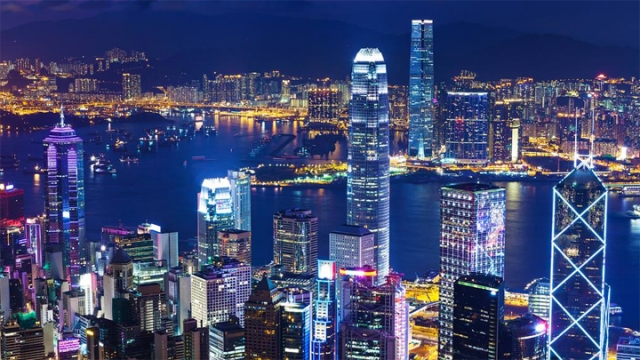

The side trip to Hong Kong happens around the first weekend of our stay in Nanjing (after tours of Beijing and Xi’an).
Airline tickets from Nanjing to Hong Kong are expensive (about US$290 one way), and hotels in Hong Kong are also expensive. However, it costs less if we fly from Nanjing to Shenzhen (which is right next to Hong Kong). To make the Hong Kong side trip affordable, we choose to stop in Shenzhen before entering Hong Kong. Travel agencies will arrange flights and hotels for the group.
Shenzhen is an exciting modern city. It was still a fishing village in mid 1980s, but now it is a huge booming cosmopolitan with about 12 million people, and serves as the back garden for people of Hong Kong, many of whom commute between the two cities on a daily basis. You can search for information about Shenzhen online.
The Hong Kong side trip is for 4 days, with the tentative plan as follows:
Day 1:
Fly from Nanjing to Shenzhen (2 hrs) and stay in Shenzhen for one night
Day 2:
Cross the border in the morning to enter Hong Kong and stay in Hong Kong for the night
Day 3:
Continue to tour Hong Kong, return to Shenzhen in evening and stay in Shenzhen for the the night
Day 4:
Fly back to Nanjing from Shenzhen
We strongly recommend that students who are business or economics majors make this side trip, so that you have opportunities to see Hong Kong as the UK version of capitalism and Shenzhen as the Chinese version of capitalism
